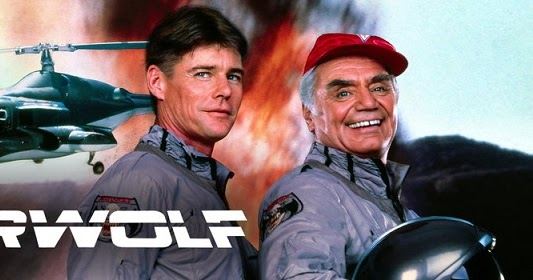
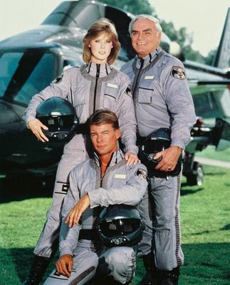

Aguia de fogo
"AGUIA DE FOGO" fazia parte de uma 'leva' de séries, cujo protagonista não era um ser humano e sim alguma espécie de máquina. Embora algumas destas séries sejam lembradas até hoje, particularmente acho que o fato do protagonista não ser humano limita um pouco o campo de ação do seriado. Por exemplo em "Águia de Fogo" o helicóptero tinha de aparecer de alguma maneira, o que obrigava o episódio a ter algum tipo de perseguição aérea.
Claro que isto (o protagonista não ser humano) acaba por diminuir os custos da produção, pois as cenas do helicóptero 'entrando' em ação só precisavam ser filmadas poucas vezes. Era sempre o piloto e o co-piloto entrando, ligando os rotores, as hélices começam a girar, o aparelho levanta voo e parte...De resto eram cenas dentro do cabine, das armas disparando, o aparelho em voo, etc.
QUANTIDADE DE EPISÓDIOS
NNunca entendi o nome do seriado aqui no Brasil. Ora, o helicóptero não tinha absolutamente nada que lembrasse uma águia, sequer uma imagem pintada...A insígnia no uniforme dos co-protagonistas era um lobo, com asas de morcego e rosnando...Por que 'Águia de Fogo'? Será que alguém na distribuidora brasileira achou que "Lobo do Ar" ficaria estranho e que 'Águia de Fogo' ficaria melhor...afinal águias voam e as armas do helicóptero soltam fogo quando disparadas...
*Temporadas: 4
* Exebição: 1984 a 1987
* Episódios: 80
INFORMAÇÕES EXTRAS
Águia de Fogo (em inglês: Airwolf; em espanhol: Lobo del aire; em França: Supercopter) é uma série televisiva americana que foi exibida de 1984 até 1987. O programa contava com um helicóptero militar supersônico, conhecido por Águia de Fogo, e sua tripulação participava de várias missões, muitas delas envolvendo espionagem, como o tema relacionado à Guerra Fria. A série foi criada por Donald Bellisario em 1984, com um total de 80 episódios, para o canal CBS. Nas primeiras três temporadas, estrelaram Jan-Michael Vincent, Ernest Borgnine, Alex Cord, e (da segunda temporada em diante) Jean Bruce Scott. Depois que a série original foi cancelada, uma quarta temporada, com um elenco inteiramente novo e sob um orçamento bem menor, foi filmada no Canadá para a emissora USA Network. Foi transmitida, no Brasil, pelas emissoras Rede Globo (1ª a 3ª temporadas) e Rede Record (4ª temporada).